| 延伸阅读 |
|---|
| 有关完整的着色器文档，请参见《Arnold 用户手册》中的用户数据着色器。 |
本简短教程介绍了如何使用 Ai 用户数据浮点节点来更改两个球体的颜色值。
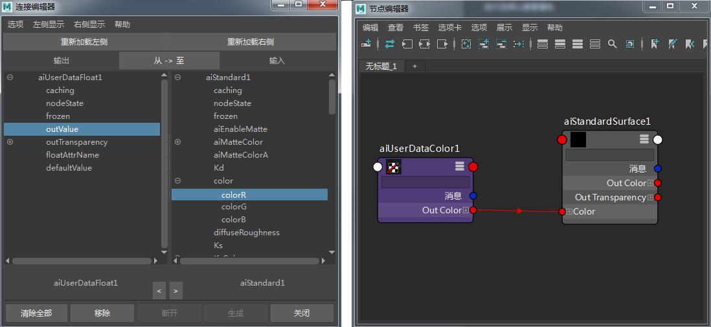
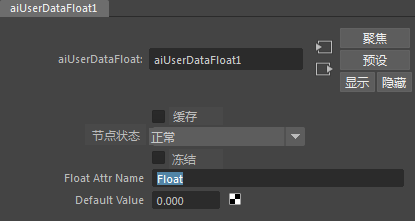
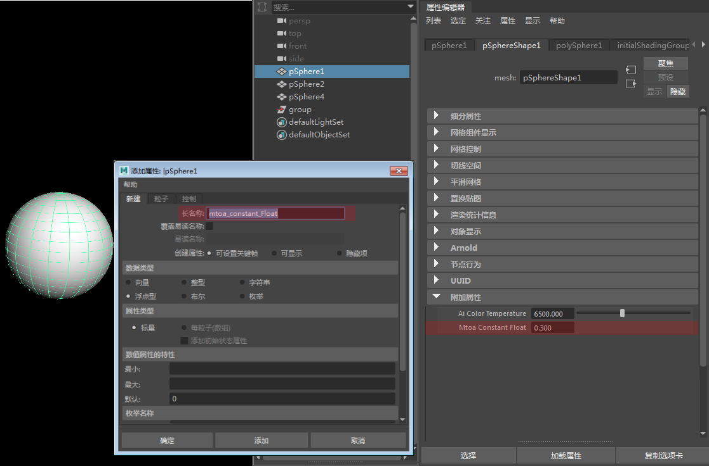
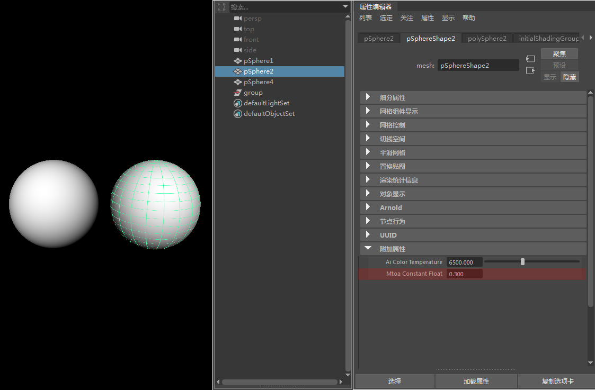
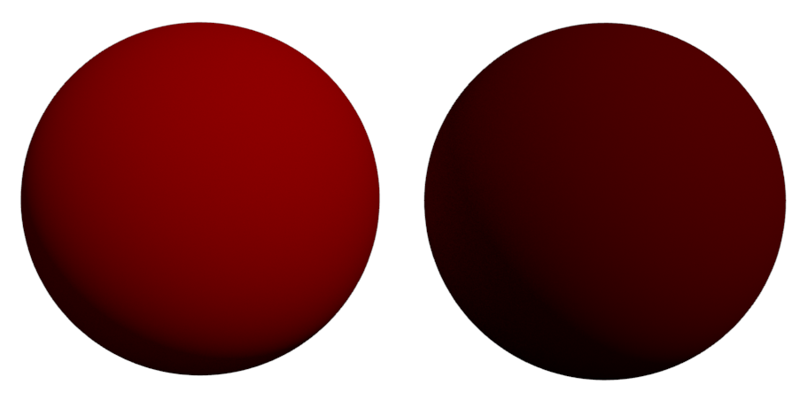
在此示例中，我们将使用 Ai 用户数据浮点节点来控制一个 2D 纹理放置节点的“偏移”(Offset)。
首先，创建一个 Ai 标准曲面着色器和一个 2D 分形纹理。将该 2D 分形纹理连接到 AI 标准曲面着色器的“颜色”(Color)属性。
创建四个平面，并为它们指定 Ai 标准曲面着色器。这时应看到所有平面都具有相同的 2D 纹理放置。
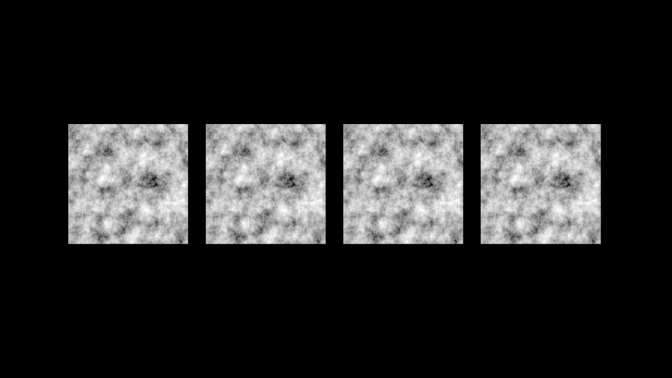
noiseOffset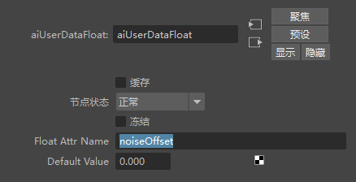
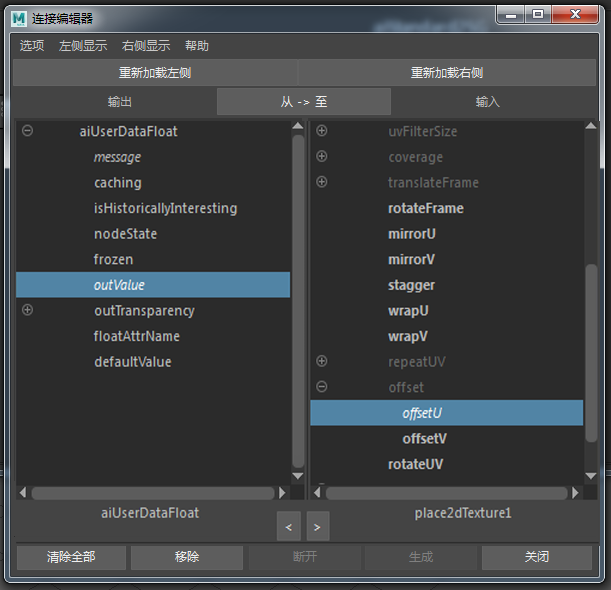
将 Ai 用户数据浮点的 outValue 连接到 2D 纹理放置的 offsetU
这些连接在节点编辑器窗口中应如下所示：
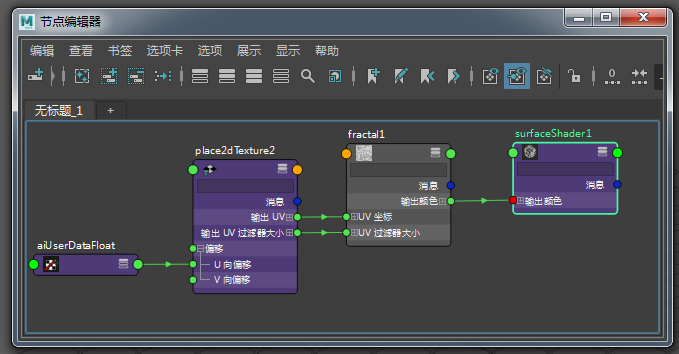
mtoa_constant_noiseOffset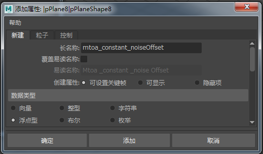
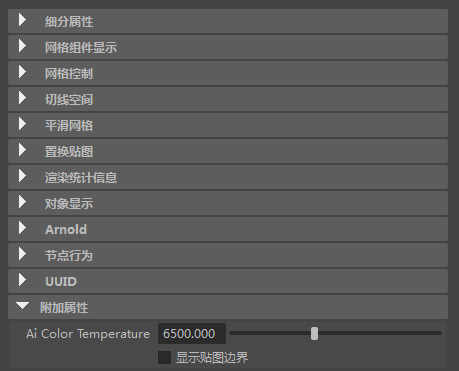
“MtoA 恒定噪波偏移”(MtoA Constant Noise Offset)属性
为上述平面重复上面的步骤。但是，更改每个平面的“Mtoa 恒定噪波偏移”(MtoA Constant Noise Offset)值。例如，0.2、0.4、0.6、0.8。
渲染平面。这时应看到每个平面的 offset_u 属性已根据在“Mtoa 恒定噪波偏移”(Mtoa Constant Noise Offset)属性中输入的值进行了偏移。
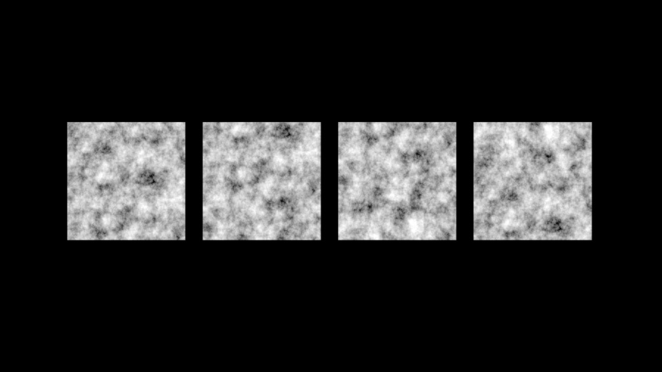
2D 纹理放置由“Mtoa 恒定噪波偏移”(Mtoa Constant Noise Offset)属性控制
要下载对应的场景，请单击此处。